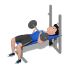

Supino reto na barra
Exercício para fortalecimento e hipertrofia da regiao abdominal, reto abdominal com enfoque na parte supra. Indicado a praticante de musculação nível iniciante e intermediário.
Tipo
Musculação
Grupo Muscular
Peitoral
Aparelho
Banco de Supino
Musculos
Peito, Costas, Perna
Como realizar
- Deite sobre um colchonete;
- Manter os joelhos flexionados, pés ligeiramente separados;
- Coloque as mãos entrelaçadas atrás do pescoço;
- Inspire e eleve os ombros em direção ao joelho;
- Expire lentamente e retorne á posição inicial.
Exercícios mais relevantes
Supino reto com halteres
Tríceps Braquial, Deltoide, Peitoral Maior, Peitoral Menor

Remada cavalinho
Deltoide, Trapézio, Romboide, Latíssimo do Dorso
Abdominal na prancha
Reto do Abdome, Oblíquo Interno, Oblíquo Externo
Crucifixo no cross
Oblíquo Interno, Oblíquo Externo
Levantamento terra
Sóleo, Bíceps Femoral, Deltoide, Glúteo Máximo, Médio e Mínimo
Tríceps no pulley
Tríceps Braquial
Desenvolvimento no pulley
Deltoide, Trapézio
Remada curvada
Reto do Abdome, Oblíquo Interno, Oblíquo Externo, Bíceps Braquial
Rosca alternada
Peito, Costas, Pernas, Deltóide
Agachamento livre
Reto Femoral, Vasto Medial, Vasto Lateral, Glúteo Máximo
Exercícios por grupo muscular

Abdome
Corpo
Peito
Ombro
EXERCÍCIOS FÍSICOS
Este site foi desenvolvido pelo Sistema SCA e pode ser usado de forma não comercial.
Todas as animações são de autoria dos desenvolvedores
Aproveite para conhecer nosso sistema de gestão para Academias
Acesse: wwww.sistemasca.com
Todas as animações são de autoria dos desenvolvedores
Aproveite para conhecer nosso sistema de gestão para Academias
Acesse: wwww.sistemasca.com